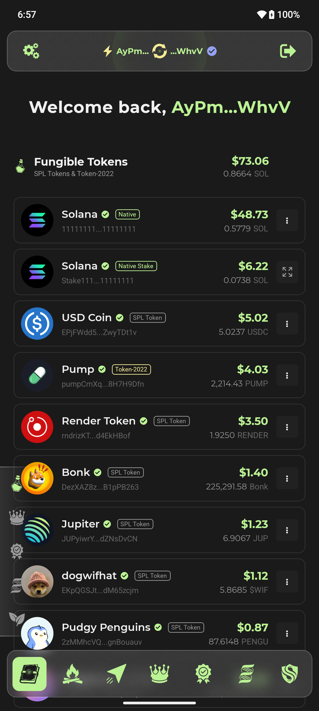
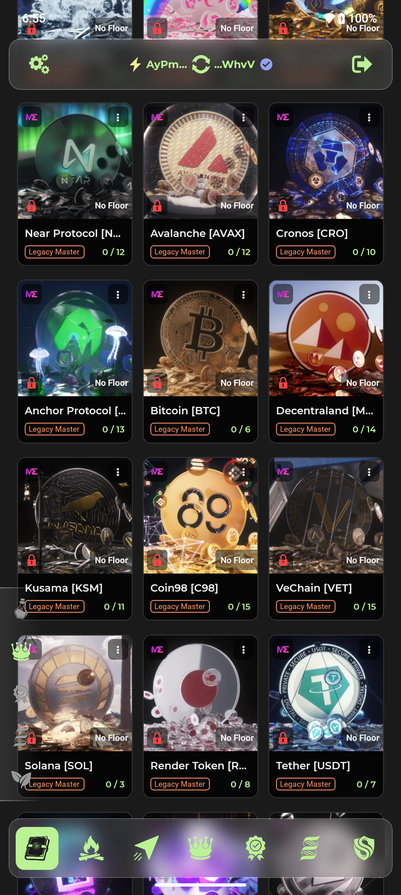
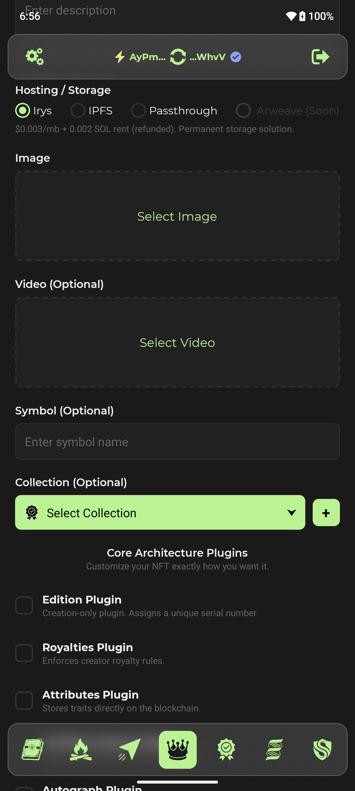
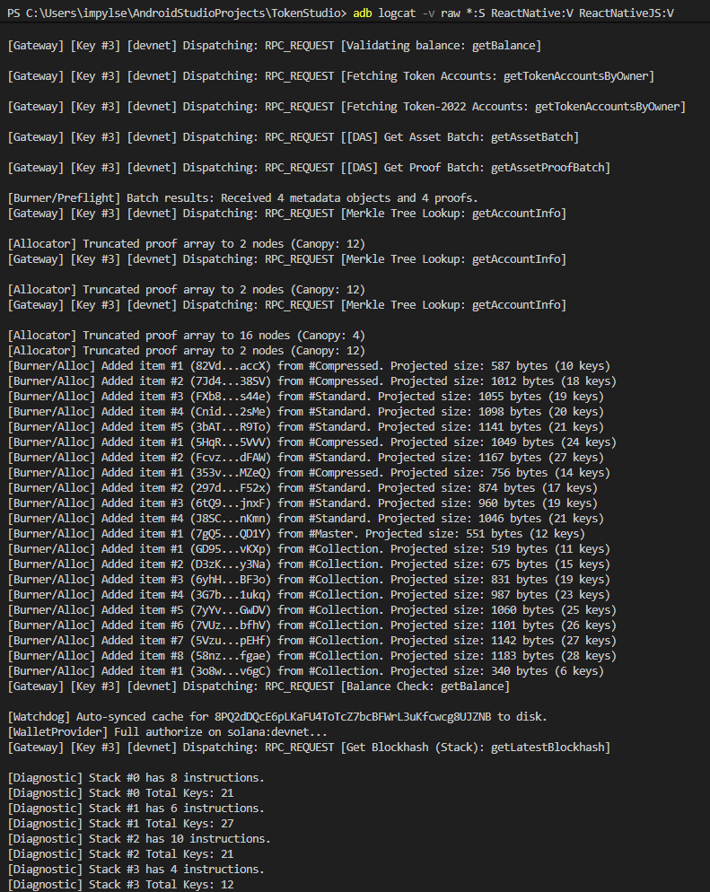

The Who
My name is Veli, and I don't consider myself a traditional developer. I have been coding as a hobby since I was a child, occasionally making some spare change on the side, but my professional background over the past 6-7 years have been as a Technical 3D Artist. Actually, Octane Render is what got me interested in 3D, they recently migrated from Ethereum to Solana (RENDER TOKEN), ive been using their rendering engine long before they launched the decentralized rendering network.
The When
In 2021 I discovered crypto after hearing about the Gamestop phenomenon. Which led me to creating a series of crypto themed 3D animations. Fast forward to mid-2025, I decided I should mint those animations as NFTs. And because I was already so well acquainted with Solana, I chose it for my NFT collection's home. Despite having very little experience with NFTs, I quickly discovered a major gap in the market: not a single marketplace or a tool out there allowed me to do exactly what i wanted with my NFTs. I spent a month going back and forth with the exchange.art team, identifying several bugs in their minting system, and yet even after their fixes, the tools still did not meet my needs. Eventually I decided to just build my own tools and mint my collection through the Solana CLI, simply to ensure that my art was presented properly. For better or worse, I am a perfectionist, and do not accept a bare minimum.
The Why
Few months later i saw another user that was asking the right questions in the Solana Discord, and I realized that if I myself needed custom tools, other artists have also likely found themselves in a similar predicament, being forced to use tools that didn't meet their standards. So I decided to give it a shot at packing all the scripts I had built for my collection into an app. I've been working on it for three months now, and already its far superior to anything else out there, not only in terms of functionality and features, but also in terms of fees, which are significantly lower than legacy marketplaces. There is still however, a long way to go.
The What
Currently I have built the minimum viable functionality for Legacy and Core NFTs, cNFTs and Merkle Trees, Legacy Master Editon printing, a very sophisticated burn algorithm (because I wanted to offer more general utility right off the bat, so users would know that this is not just a simple NFT minting tool), similarly polished transfer feature that can also send hundreds of NFTs in batches with the least amount of wallet interactions (like the burn algorithm), and a relatively functional and informative wallet overview. I hold a personal belief that anything that i create is only as good as its visual language it conveys. So providing a visual feedback for every action the user takes, or the app executes in the background (like the network connectivity indicator up top and the in-action progress logs), is also very important. Im doing everything in my power to create a fluid and intuitive UX that doesnt interfere with the natural movement of the user's thumb. I am deliberately moving away from the clunky standard where you're forced to reach for the top of the screen just to dismiss an annoying popup.




I'm only applying now, because I first
wanted to prove to myself that I can actually do all this, before I make any promises.
The To-Do List
The primary
objective of Token Studio is to transform the Seeker from a mainstream consumer device into a
professional workstation, by putting the granular power of a desktop CLI directly into the hand of the
user, removing the need for a PC to manage even the most complex on-chain assets. My endgame goal is to
evolve this application into the definitive NFT "Superapp", and possibly beyond Non-Fungibles, hence why
I
called it Token Studio. I do plan on re-branding at some point though, I wanted to start with a name,
users would instantly understand what it does.
One of my core philosophies is that I want the app to not have
to rely on a centralized backend, to eliminate dependency on a single entity and ensure the utility
remains a permanent fixture of the ecosystem that continues to function as long as the Solana blockchain
is humming along. I am aware that eventually some features might unfortunately require a backend (for
security reasons), so finding a way around that without compromising the app's decentralized "soul" is
the only major technical puzzle im yet to make a decison on.
I don't necessarily have a super well
thought out "roadmap", mostly because I don't want to sell
"vaporware" or promises I might later pivot on. But here is whats currently on my to do list:
The How
I'm applying for a development grant, because I want to finish what I started. It would allow me to focus on Token Studio full-time, run bug bounties, cover development costs, unlock advanced features, and waive all service fees for all users for the next 12 months. This grant would ensure that I don't have to take on outside freelance work & gigs for at least a year, allowing 100% of my creative energy to stay within the Solana Mobile ecosystem.